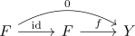
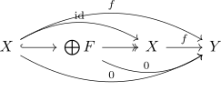
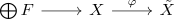

existence of only trivial phantom maps of spectra and retract of a direct sum of finite spectra
Proposition
- $X$ is a retract of a direct sum of finite spectra
- there exist no nontrivial phantom maps out of $X$
Proof
1) $\implies$ 2)
no nontrivial phantom maps out of a finite spectrum
Let $f: F \rightarrow Y$ be a phantom map. Then we have a diagram

where the composite is nullhomotopic since $F$ is a finite spectrum
no nontrivial phantom maps out of a sum of finite spectra
follows from the universal property of the coproduct where the coproduct of the zero morphisms is again the zero product:
no nontrivial phantom maps out of a retract of a sum of finite spectra
Let $X$ be a retract of a sum of finite spectra $\bigoplus F$. Let $f: X \rightarrow Y$ be a phantom map. Then the composite $\bigoplus F \rightarrow X \rightarrow Y$ is also a phantom map (cf. phantom maps in spectra is a 2-sided ideal), which is then trivial by the previous argument. Thus we have a diagram

which witnesses $f \simeq 0$.
2) $\implies$ 1)
Recall that there exists a weakly initial sequence

where $\bigoplus F$ is a sum of finite spectra and $\varphi: X \rightarrow \tilde{X}$ is a phantom map. Hence $\varphi$ is - by assumption - the zero map. But $\bigoplus F$ is also the fiber and the fiber of the nullhomotopic map is here given by $X \oplus \tilde{X}[-1]$. In particular $X$ is a retract of $X \oplus \tilde{X}[-1] \simeq \bigoplus F$.